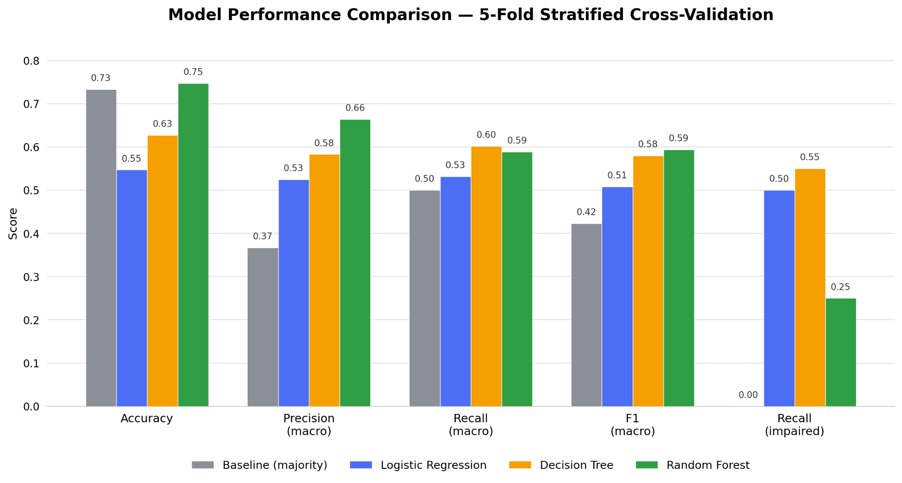
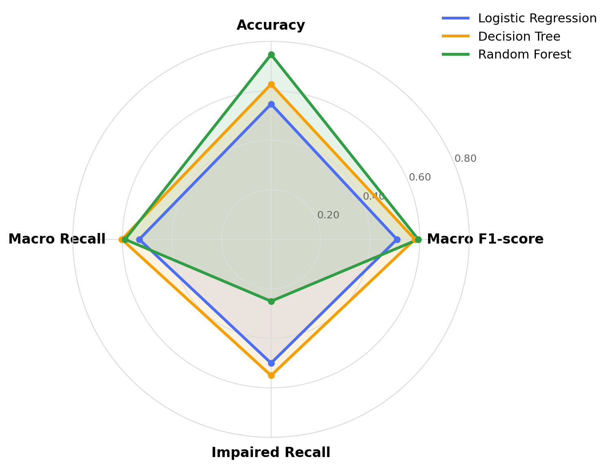
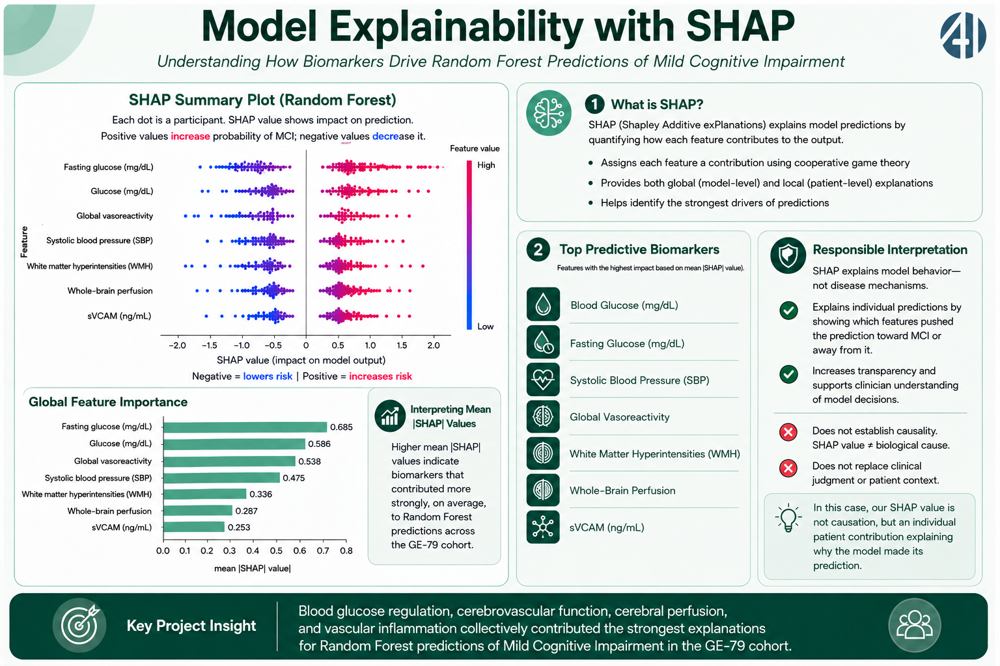

Clinical context
Type 2 Diabetes can contribute to microvascular and white-matter changes associated with cognitive decline.
GE-79 MCI Research Poster Version 2.0
AI4ALL IGNITE · GROUP 6C · SUMMER 2026
A research-only comparison of supervised machine-learning classifiers using clinical and MRI-derived biomarkers from the PhysioNet CDED GE-79 dataset.
INTERACTIVE VISUAL PLACEHOLDER
Reserved for the animated clinical-biomarker visual. Add its script or embed here without changing the poster layout.
01 · QUESTION AND STUDY DESIGN
AI4ALL Ignite Summer Cohort 2026, Group 6C. This study evaluates whether supervised models can classify MCI using clinical and MRI-derived biomarkers.
Type 2 Diabetes can contribute to microvascular and white-matter changes associated with cognitive decline.
GE-79 supplied the primary cohort. GE-75 is reserved for future validation and was not merged into the training pipeline.
Binary target: No Impairment (MMSE ≥ 28) versus Impaired (MMSE 25–27).
COHORT COMPOSITION
There are more participants in the no-impairment group. A model can therefore appear strong while missing people in the smaller impaired class.
02 · METHODS
All classifiers received the same 14 selected features and were evaluated with five-fold stratified cross-validation, preserving class balance across folds.
Feature selection used stable Random Forest importance over 20 seeds, then retained literature-based science anchors. The final 14-feature set was shared across models to keep the comparison fair.
03 · RESULTS AND INTERPRETATION
Whole-number percentages below are the project’s model-summary values. The charts are generated from data.js, so one confirmed change updates every display consistently.
STREAMLIT EVIDENCE · PROJECT-OWNED VISUALS
These visuals were generated for this project’s Streamlit model interface using the GE-79 analysis. They document performance, tradeoffs, and Random Forest explanations; they are not third-party stock graphics.



MODEL 0 · FEATURE SELECTION
Random Forest ranking was averaged across 20 seeds, then combined with clinically motivated science anchors. This guards against an unstable short list in a small cohort.
04 · IMPACT, BIAS, AND LIMITATIONS
This is a feasibility study, not clinical guidance. Model scores do not establish generalizability, causal effects, or readiness for patient care.
May favor the majority class and make accuracy look more reassuring than it is.
A single-site cohort may not represent other regions, communities, or care settings.
Device variation and imputation choices can introduce systematic error.
Available biomarkers and literature anchors reflect gaps in prior research.
PRACTICAL SAFEGUARDS
Leakage preventionStratified cross-validationMacro F1 + impaired recallSHAP explainabilityTransparent reportingPOTENTIAL VALUE
False positives can create unnecessary testing; false negatives can delay appropriate follow-up. Equity must be tested rather than assumed.
NEXT RESEARCH STEP
Use GE-75 for future validation work; pair explainability with longitudinal and causal analysis before considering any real-world use.
05 · PROJECT RESOURCES
Each QR code repeats a visible link so the poster remains accessible even if a camera app declines to cooperate. Technology likes an entrance.
TAKEAWAYS
Different models are useful for different goals; there is no single “best” score.
Random Forest performed best overall, while Decision Tree found more impaired cases.
Blood sugar, blood pressure, blood flow, and white-matter changes mattered most to the model.
This is early research, not a medical diagnosis or a treatment recommendation.
REFERENCES · APA 7TH EDITION